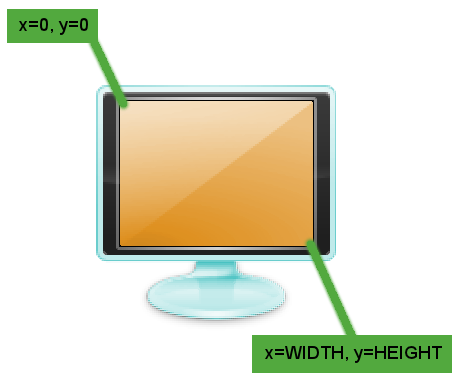
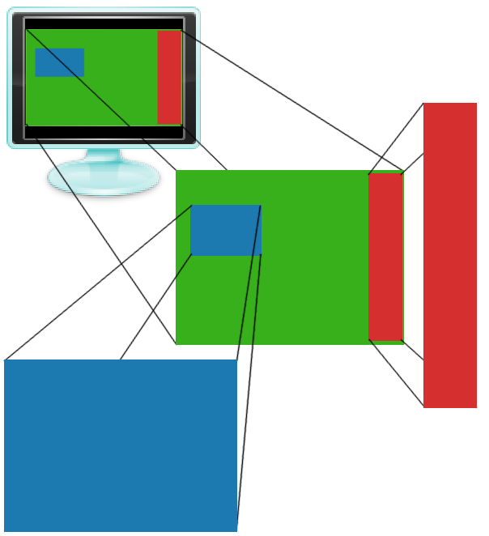

info-beamer is an interactive multimedia presentation framework. It is
somewhat similar to fluxus or
processing. info-beamer allows you to create
impressive realtime visualisations using the Lua programming
language.
info-beamer is currently focused on Linux. It has been tested on Ubuntu
and Fedora.
info-beamer tries to have dependencies that are available for most linux
distributions. It shouldn't be necessary to compile obscure packages before
compiling info-beamer. Here are the required 3rd party packages:
| Dependency | Why? |
|---|---|
| lua (5.1) | for scripting |
| libevent (>2.0) | io multiplexing |
| glfw | opengl initialization |
| GL & GLU | opengl & utility functions |
| GLEW | accessing opengl extensions |
| ftgl | truetype font rendering for opengl |
| DevIL | reading image files |
| libavformat | video decoding |
| libavcodec | |
| libavutil | |
| libswscale | |
| libz | |
| markdown (python) | (optional) for rebuilding the documentation |
Ubuntu provides all required packages. Just execute the following command:
user:~$ apt-get install liblua5.1-dev libevent-dev libglfw-dev \ libglew1.5-dev libftgl-dev libavcodec-dev libswscale-dev \ libavformat-dev libdevil-dev
info-beamer is provided as a source release on
http://github.com/dividuum/info-beamer.
The best way to install info-beamer is to clone the github repository and
type make inside the root directory:
user:~/src$ git clone https://github.com/dividuum/info-beamer.git [...] user:~/src$ cd info-beamer user:~/src/info-beamer$ make [...] user:~/src/info-beamer$ ./info-beamer Info Beamer rev-foobar (http://dividuum.de/info-beamer) Copyright (c) 2012, Florian Wesch <fw@dividuum.de> usage: ./info-beamer <root_name>
There is nothing special to do. info-beamer consists of only a single
binary called info-beamer. You can move it to any directory you like
(e.g. /usr/local/bin). Or you can call make install to install
info-beamer into /usr/local/bin.
user:~/src/info-beamer$ sudo make install install -o root -g root -m 755 info-beamer /usr/local/bin/
info-beamer uses directories as presentable units. A minimal example
consists of a single directory (called a node) containing a font file and a
control file node.lua. Let's look at the example code in samples/hello:
gl.setup(1024, 768) font = resource.load_font("silkscreen.ttf") function node.render() font:write(120, 320, "Hello World", 100, 1,1,1,1) end
Let's look at each line:
gl.setup(1024, 768)
This call will initialize a virtual screen of width 1024 and height 768. The virtual screen is the node's window to the world. The virtual screen is scaled up to the available display space.
font = resource.load_font("silkscreen.ttf")
This line will read the Truetype font silkscreen.ttf and create a font
object font. This object can then be used to write output using the font.
function node.render() font:write(120, 320, "Hello World", 100, 1,1,1,1) end
info-beamer will call the function node.render for each frame it will
display on the screen. Inside of node.render it's up to you to decide
what do show on each frame. In this example we use the previously create
font object to write "Hello World" to the virtual screen.
The first two parameters of write are the x and y Position on the virtual
screen. x is the horizontal position. A value of 0 is the leftmost
position. y is the vertical position. The value 0 is the topmost
position. Therefore x=0, y=0 is in the topleft corner of the virtual
screen.

"Hello World" is obviously the value we want to put on the virtual
screen. 100 is the size of the output in screen units. 1,1,1,1 is
color in RGBA format (a bright white).
To display this example using info-beamer, switch into the samples
directory and type
user:~/src/info-beamer$ cd samples user:~/src/info-beamer/samples$ ../info-beamer hello
This will start info-beamer. It will open the directory hello (called
the hello node) and look for the file node.lua. This should get
you a new window showing the "Hello World" text in the center to the
screen.
info-beamer is a rapid development environment. If you update the code
for your example and save it, info-beamer will pickup the changes and
show them to you immediatelly. Let's try this: While info-beamer is still
running and displaying the "Hello World", change the string "Hello World"
to "Updated World" in node.lua and save the file node.lua.
info-beamer will notice that the file changed and reload it. The output
window will now show the text "Updated World" to you!
info-beamer can load more than just font files. It will load various
image formats using the resource.load_image function. Code using this
function might look like this:
gl.setup(1024, 768) background = resource.load_image("background.jpg") function node.render() background:draw(0, 0, WIDTH, HEIGHT) end
The image background.jpg will be loaded into the image object
background. Inside node.render this background image is the drawn from
coordinates 0, 0 (top left corner of the virtualscreen) to WIDTH,
HEIGHT (bottom right corner of the screen). WIDTH and HEIGHT will be
initialized with the values from the gl.setup call.
You can load videos and display them. Doing so is quite similar to image loading:
gl.setup(1024, 768) video = resource.load_video("video.mp4") function node.render() video:next() video:draw(0, 0, WIDTH, HEIGHT) end
video now contains a video object. Calling video:next will read the
next frame of the video. video:draw will then display this frame. You'll
notice that video playback will be too fast. Since node.render is called
for each frame info-beamer wants to display, it's most likely that this
function will be called 60 times per seconds (the refresh rate of your
monitor). Likewise your video might have 25 frames per seconds. So
you'll have to slow down decoding to the actual framerate of the video.
util.videoplayer will do all of this for you:
gl.setup(1024, 768) video = util.videoplayer("video.mp4") function node.render() video:draw(0, 0, WIDTH, HEIGHT) end
util.videoplayer is a helper function that provides a small wrapper
around video resources. It will automatically decode the video using the
correct framerate.
A directory (called a node) can contain subdirectories. Each subdirectory
is then loaded as a child node. The parent node can render child nodes like
any other resource. Let's say we create two nodes called Blue and Red.
We can let info-beamer play each of them individually. But what if we
want to combine them for our presentation? This is where the nesting
feature of info-beamer becomes useful. You start by creating another node
called Green. Then you just move the directories for node Blue and
Red into the directory Green. The file tree will the look like this:
-+- green -+- node.lua
|
+- red ---- node.lua
|
'- blue --- node.lua
Inside of Green you can then render both Red and Blue into an image
object using resource.render_child and display them on Greens virtual screen.

The above setup is available in the directory samples/blue. It contains
node.lua and two child directories called red and blue. Let's look at
green/node.lua:
gl.setup(800, 600) function node.render() gl.clear(0, 1, 0, 1) -- green -- render to image object and draw local red = resource.render_child("red") red:draw(640, 20, 780, 580) -- render an draw without creating an intermediate variable resource.render_child("blue"):draw(50, 200, 300, 380) end
It creates a new virtual screen sized 800x600. For each frame it clears the
screen using gl.clear with a bright green.
Then it renders the child node red (aka the subdirectory red) into
a new image object called red and draws it into the square from 640,20 to
780,580. The sourcecode for green/red/node.lua looks like
this:
gl.setup(100, 800) function node.render() gl.clear(1, 0, 0, 1) -- red end
It starts by setting up a 100x800 screen. Each time it is is rendered
(which happens if resource.render_child is called), the child clears the
screen by calling gl.clear with the color red.
green/blue/node.lua looks almost identical but clears the screen with a
bright blue:
gl.setup(640, 480) function node.render() gl.clear(0, 0, 1, 1) -- blue end
You can start the example like this:
user:~/src/info-beamer/samples$ ../info-beamer green
You can also start both childs on their own:
user:~/src/info-beamer/samples$ cd green user:~/src/info-beamer/samples/green$ ../../info-beamer red
or
user:~/src/info-beamer/samples/green$ ../../info-beamer blue
This is a great feature: You can develop nodes independently and later include them in other nodes.
info-beamer contains another useful feature for including content. It can
act as a VNC client. VNC is a cross platform desktop sharing protocol.
info-beamer implements the client side of this protocol. If you setup a
server on a remote machine, info-beamer can connect to this machine and
create a VNC object you can use to render the remote desktop in your
presentation. Here is an example:
gl.setup(1024, 768) vnc = resource.create_vnc("192.168.1.1") function node.render() vnc:draw(0, 0, WIDTH, HEIGHT) end
This will try to create a connection to a running VNC server on
192.168.1.1. The server must not be password protected (since
info-beamer doesn't support any kind of authentication). If you
create the server, be sure that you are in a secure environment. Inside
node.render the content of the remote desktop is drawn onto the screen.
info-beamer supports GLSL shaders. Shaders are small programs that run on
the GPU. They enable various realtime effects using the raw power of your
GPU. Shaders come in pairs: A vertex shader and a fragment shader. Vertex
shaders are responsible for transforming 3D positions. Fragment shaders
then calculate the color displayed on each visible pixel of the transformed
object. Fragment shaders can be used to create stunning realtime effects.
info-beamer enables you to pass numeric values and additional textures
into the shader. This allows you to do all kinds of crazy stuff like for
example blending videos with static textures.
samples/shader contains a small basic shader example:
gl.setup(640, 480) util.resource_loader{ "lua.png", "shader.vert", "shader.frag", } function node.render() gl.clear(1,1,1,1) shader:use{ Effect = math.cos(sys.now()*2)*3 } lua:draw(120, 40, 520, 440) end
util.resource_loader is a utility function that makes resource loading
very easy. You just give it a number of filenames. It will then detect
which loader is responsible for the given fileformat and load the file into
a global variable whose name is derived from the filename. The above code
will load the image lua.png into the global variable lua. It will also
load the shader pair shader.vert and shader.frag into the global
variable shader. The resource loader will also make sure that changed
files will be reloaded. So if you edit and save for example shader.frag,
info-beamer will instantly reload the shader. You can see changes
to your effect immediatelly. This is great for rapidly development of
effects.
Inside of node.render we first clear the screen. Then we activate the
shader, which was automatically created from the files shader.vert and
shader.frag by util.resource_loader. We pass in a variable Effect
which depends on a time value. This will create a dynamic effect.
Loads the image file specified by filename into a texture objects.
Please note that image loading is case sensitive. info-beamer supports
the most common file formats.
The returned image objects supports the following methods:
Draws the image into a rectangle specified by the give coordinates.
Returns the size of the image.
Loads any supported video file and returns a
video object. The video objects supports the following methods:
Draws the current video frame into a rectangle specified by the give coordinates.
Decodes the next frame of the video. Returns true, if a frame was decoded or false if there was no next frame.
Returns the size of the video.
Returns the frame per seconds as specified by the video file.
Loads the given Truetype font file and returns a font objects. It
supports the following methods:
Writes the provided text to the coordinates given in x and y. The
color is given by r, g, b and a, the red, green, blue and alpha
values. alpha is an optional value. default is 1.0 (opaque). The call will
return the width of the rendered text in screen space.
text must be UTF8 encoded, if you intend to use characters outside the
ascii range.
Mostly identical to font:write but will not use a solid color but the
texturelike object. texturelike can be an image, a video or any other
texturelike objects. The texture will be used for each character
individually.
Will load the content of the specified file into a string value. At most 16kb (16384 bytes) are readable.
Will create a new shader object. vertex_shader and fragment_shader
are strings containing the shaders in the GLSL language.
Will activate the shader and pass in the given variables. A call might look like this:
shader:use{ float_value = 123.45, some_texture = image, }
You can pass in numerical values. Inside the shader, they will be available as a float uniform values:
uniform float float_value; // will have the value 123.45
Textures (which can be images, videos or any other texturelike object)
will be available as a 2d sampler:
uniform sampler2d some_texture;
The shader will be active for the rest of execution of the node.render
call unless deactivated using :deactivate.
Deactivates the active shader.
This call will create VNC client. It will connect to the specified address.
The remote desktop will be available as a texturelike object. If no port
is given, the default value of 5900 will be used.
Draws the current remote desktop to the screen.
Returns the size of the remote desktop. Will return 0x0 is the client is not yet connected to the VNC server.
Returns a boolean value that indicates if the client is still connected to the server. If the client was disconnected (which can have various reasons like an invalid hostname, a closed connection or invalid VNC packets) it will not automatically reconnect. It's up to you to create a new client if you need a persistent connection.
Renders a child node into an image object. Rendering will call
node.render within the child.
The returned image supports the same methods like images objects created
by resource.load_image.
Initializes the virtual screen of the current node. Will also set the
global variables WIDTH and HEIGHT.
Clears the virtual screen using the given color.
Like the native glPushMatrix call, this will save the current ModelView
matrix. This function can only be called inside of node.render (or any
functions called from there). To avoid errors, you can only push 20
matrices. This should be more than enough for normal visualisations.
Restores a previously saved matrix. Can only be called inside
node.render.
Resets the view to an orthogonal projection. It will create a projection
where the topleft pixel of the virtualscreen is at 0, 0 and the
bottomright pixel is at WIDTH, HEIGHT. This is the default mode.
This will create a perspective projection. The field of view is given by
fov. The camera (or eye) will be at the coordinates eyex, eyey,
eyez. It will look at centerx, centery, centerz. The up vector of
the camera will always be 0, -1, 0.
Here are some useful values to try if you want to switch from gl.ortho to
gl.perspective:
gl.perspective( 60, WIDTH/2, HEIGHT/2, -WIDTH/1.6, WIDTH/2, HEIGHT/2, 0 )
Produces a rotation of angle degrees around the vector x, y, z.
Consider using gl.perspective to see the scene in perspective mode. It
might look better.
Produces a translation by x, y, z. Consider using gl.perspective to
see the scene in perspective mode. It might look better.
Returns a timestamp as a floating point number that will increment by 1 for
each passing second. The timestamp is relative to the start of info-beamer.
You should overwrite this function with your own code. This function will
be called by info-beamer (or by a parent node using
resource.render_child). It should create the current scene.
Nodes always have a name and a path. The name is the directory name of the
node. The path is the full path to the node from the toplevel node.
If you send data to a node using TCP (see the input event) or UDP (see
osc and data events), you address the node using its full path. Using
node.alias, you can give your node an alias name. This name must be
unique in a running info-beamer instance.
Registers a new eventhandler. Possible event_names are described below.
Event handlers cannot be unregistered. Event handlers will be called in the
order of registration.
info-beamer allows you to listen to various events. All events must be
registered using node.event. The following events are available:
Registers an event handler that is called if info-beamer detects that a
child node was added to the current node. The name of the new child node is
provided in child_name. Example usage:
node.event("child_add", function(child_name) print("new child " .. child_name .. " added") end)
Registers an event handler that is called if info-beamer detects that a
child node was removed from the current node. The child name is provided in
child_name.
Registers an event handler that is called if info-beamer detects that a file was
created or modified in the current node. This allows you to detect updated
resources.
Registers an event handler that is called if info-beamer detects that a
file was removed from the current node.
Registers a new event handler that will be called if UDP data is sent to the node. You can send udp data like this:
user:~$ echo -n "path:data" | netcat -u localhost 4444
Where path is the complete path to the node (in case of nested nodes) and
maybe a suffix. data is the data you want to send. info-beamer listens for
incoming UDP packets on port 4444.
info-beamer will dispatch packets to the node that best matches the
specified path. Let's say you have two nodes:
nested nested/child
If you send a packet to nested, the data callback will be called in the
node nested. If you send a packet to nested/child/foobar the data
callback will be called in nested/child. suffix will have the value
foobar. See util.data_mapper for an easier way to receive and dispatch
udp data packets. You can give your node a unique alias name using
node.alias. This might be useful if you use OSC clients that don't
support changing the paths they create.
info-beamer also supports OSC (open sound control) packets via UDP. If
you send an OSC packet containing a float to node/slider/1, the osc
callback will be called with the suffix slider/1 and the decoded osc
values. See util.osc_mapper for an easier way to receive and dispatch osc
packets.
info-beamer allows incoming TCP connections to port 4444. You'll be
greeted by a welcome line and are expected to provide a node name.
info-beamer will return ok! if you provide a valid node name. From this
moment on, info-beamer will feed you the output of the node. This can be
used for debugging a node from remote.
Any text you type while connected will trigger the input event. The
input event will be given the provided line. This can be used to feed a
node with input from outside sources.
node.event("input", function(line) print("Input was: " .. line) end)
All utility functions could be rewritten using the functions decribed above. They are provided for your convenience.
Creates a magic resource loader that will load the resources from the given filenames and put them in global variables. It also keeps them updated if files change. Example usage:
util.resource_loader{ "font.ttf", "image.jpg", "video.mp4", "shader.vert", "shader.frag", }
This will load the font font.ttf and put the font object into the global
variable font. The global variable image will contain the image object.
And so on.
The util.resource_loader will also detect changes to the files and reload
them.
Loads the vertex and fragment shader from two files called basename.vert
and basename.frag and returns a shader objects.
Will create a OSC mapper that makes if simple to dispatch OSC messages to different functions. Think of it as Url-routing for OSC messages:
util.osc_mapper{ ["slider/(.*)"] = function(slider_num, slider_arg1, ...) ... end; ["fader/1"] = function(fader_args) ... end; }
The example will allow the node to receive two different type of OSC
messages. If the node is called example, the following OSC path will
trigger the slider callback function:
/example/slider/123
In the callback, the argument slider_num will be a string containing the
value 123 while slider_arg1 will contain the first OSC argument.
Provides the same functionality as the osc_mapper, but handles simple UDP
packets.
Provides a small wrapper around resource.load_video. Provides simplified
playback of videos by handling framerate issues. opt_table is an optional
table containing the key loop. It is a boolean value that indicates if
the videoplayer should loop the video.
util.videoplayer will return a video object that has the following method:
Draws the current video frame into a rectangle specified by the give coordinates.
It is often necessary to display images, videos, child nodes or vnc streams
using the correct aspect ratio (so they don't look stretched).
util.draw_correct does this for you.
-- maybe wrong, stretches the image image:draw(0, 0, WIDTH, HEIGHT) -- keeps aspect ratio util.draw_correct(image, 0, 0, WIDTH, HEIGHT)
Pretty print the given Lua object.
Current width of the virtual screen as set by gl.setup. Writing to this
variable has no effect. Use gl.setup to change the virtual screen size.
Current height of the virtual screen as set by gl.setup. Writing to this
variable has no effect. Use gl.setup to change the virtual screen size.
Name of the current node (its directory name).
Complete path of the node.
Table of available files in the directory of the node. The key contains the
filename, the value is the timestamp (comparable to sys.now()) of the
last change.
Table of child nodes. The key contains the childs name. These can the
rendered using resource.render_child. The value is a timestamp
(comparable to sys.now()) of the first detection of the child node.
Thanks for your interest in info-beamer. info-beamer tries to be a
simple framework for building interactive realtime presentations. Lets keep
it that way.
Keep it simple. info-beamer avoids unnecessary clutter. If a simple external
Script could solve a problem, there is no need to do it in info-beamer. If a
problem is solvable within Lua, there is no need to include a C-version
(unless speed prohibits a Lua solution).
Keep it small. info-beamer is a simple self-contained binary. It shouldn't
depend on files somewhere in the filesystem. Keep info-beamer portable.
Keep it robust. info-beamer tries to provide a crash free environment. It
shouldn't be possible to crash info-beamer by using the provided API.
Keep it safe. info-beamer tries to provide a secure environment. Usercode
is sandboxed and memory and processing time is limited. It should be
safe to execute random node code without worrying about malicious
behaviour.
Keep it statefree. It should be possible to develop a node independently from other nodes. Composing them shouldn't change their behaviour. OpenGL or other state should not leak into or from child nodes.
Keep it scriptable. info-beamer embraces scripting. Not just from the inside but
also from the outside. It provides several ways to control a running
instance: Changing files, sending UDP/OSC packets or using a TCP
connection. Make it easy to script things.
Keep it readable. The core info-beamer code tries to be simple. It should be
possible to read and hopefully understand the complete sourcecode
in one evening.
Keep it compilable. info-beamer tries to use libraries that are widely
available. It shouldn't be necessary to build obscure dependencies.
info-beamer uses a simple GNU Makefile. It shouldn't be necessary to
include a buildsystem that creates files larger than all of info-beamers
sourcecode combined.
Feel free to fork and enhance info-beamer and send me pull requests.
Please keep info-beamer clean and simple.